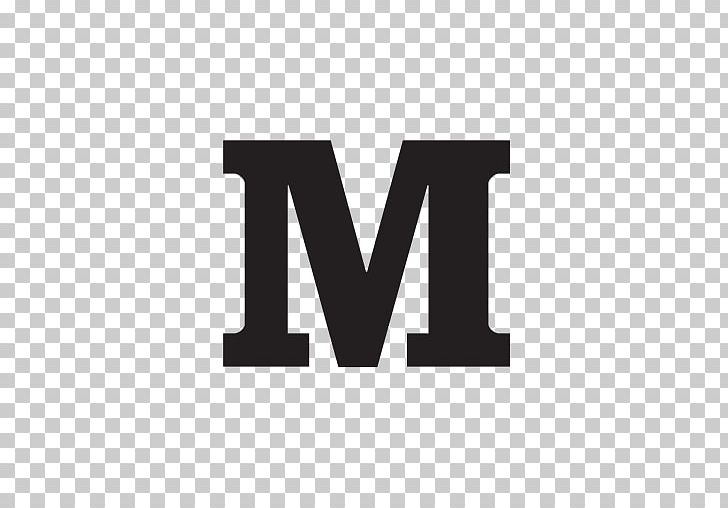

<mat-toolbar>
  <div class="links">
    <a href="https://github.com/flaviuvadan" target="_blank">
      </a>
    <a href="https://www.linkedin.com/in/flaviuvadan/" target="_blank">
      </a>
    <a href="https://twitter.com/flaviuvadan/" target="_blank">
      </a>
    <a href="https://medium.com/@flaviuvadan" target="_blank">
      </a>
  </div>
</mat-toolbar>
